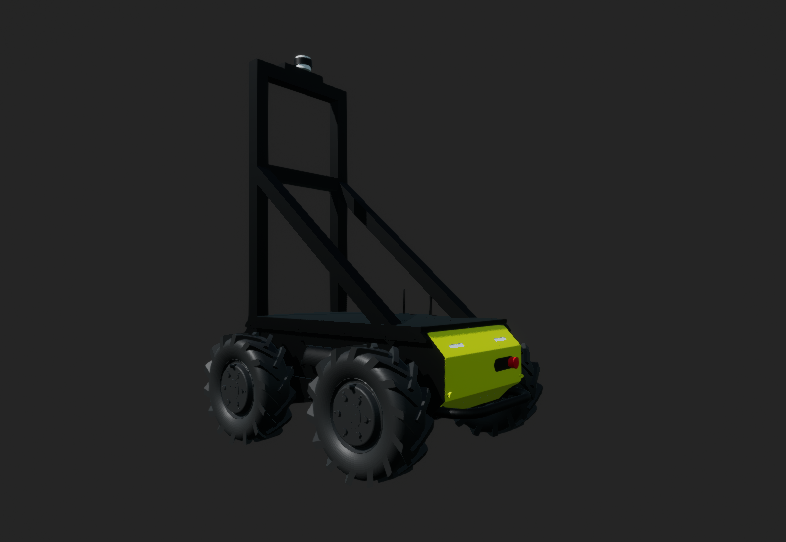
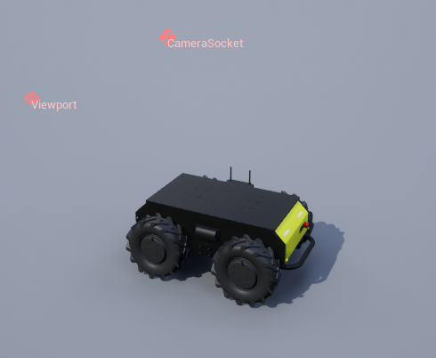

Husky Vehicle
{kind=link}

Description
A simple Husky-like ground vehicle with 4 wheels. The HuskyVehicle is designed to be a simple ground agent for testing and development purposes.
See the HuskyVehicle.
Control Schemes
- Wheels (``0``)
A 3-length floating point vector specifying the force on each front wheel and the reset trigger. The vector is in the format [Front Left wheel, Front Right wheel, Flip Reset trigger]. The flip reset trigger is a binary value where 0 means no reset and 1 means reset the vehicle position if it is upside down.
Note
If the vehicle has a weird rocking motion, try decreasing the force applied to the wheels. In most cases, a value of 700-800 should work well.
Sockets
All sockets are oriented in the agent’s body frame (right-handed NWU, with the x-axis pointing forward, the y-axis pointing to the left, and the z-axis pointing upward) unless stated otherwise. See Sensor Placement & Sockets for details.
Socket Definitions
CameraSocketlocated at the top of the sensor platform.Viewportwhere the robot is viewed from.
Socket Frames
{kind=link}
